Simulation-梁单元
新建
打开Conveyor Frame.SLDPRT模型，新建静应力算例
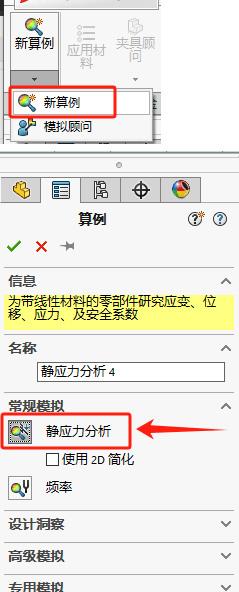焊件类型的实体会自动转成梁单元；
梁单元里有个说法是【长细比】。指梁单元通常用于表现细长的零部件。为了让横梁获得可接受的结果，横梁的长度应该为横截面最大尺寸的 10倍。软件会自动检查这个比率，当横梁的长细比小于10时用户将会得到警告提示，如图10-33所示，
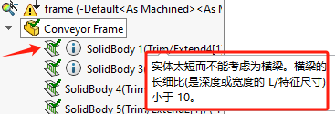编辑横梁定义
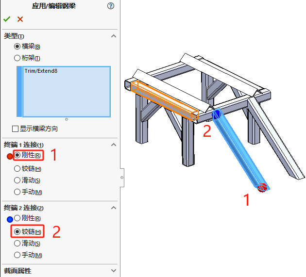结点组
结点组是横梁单元里，两端点的表现。出现在结构构件的自由端和两个或更多结构构件的交叉处。
- 粉红色
高亮显示两个或多个结构构件相交处的接点，
- 浅绿色
高亮显示结构构件在其自由端的接点。
材料
对所有横梁单元应用【普通碳钢】；
夹具
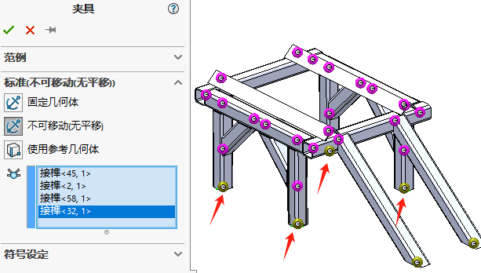 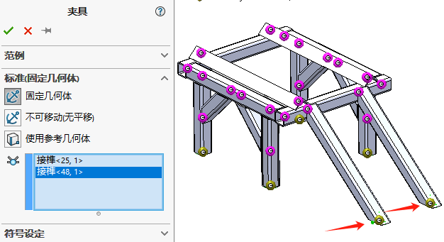载荷
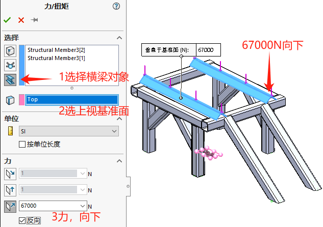 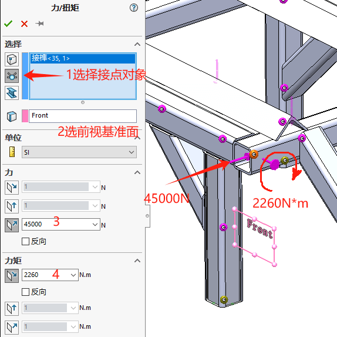网格
按默认设置生成网格，这里需要留意的是：梁单元的网格是做了简化处理，即会以圆形轮廓简化梁单元界面（不影响计算结果）。
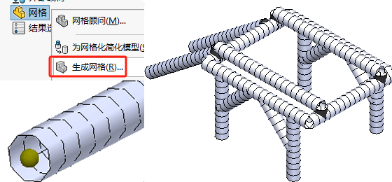当然你也可以通过右键【网格-渲染横梁轮廓】，来显示原本的梁截面形状。
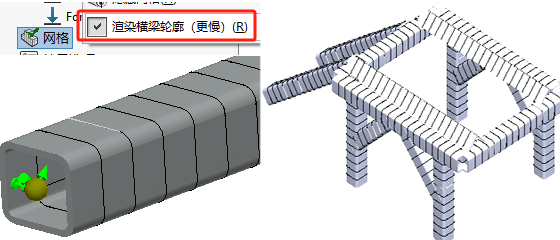运行
架顶部连接的部分。注意，有焊接缺陷的部分绕接合处有转动，而其他焊件保持互相垂直，并且整体结构有所变形。这说明带有焊接缺陷的连接并没有真正传递力矩。结果显示如图
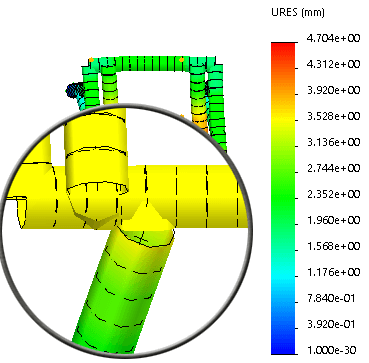轴应力
轴应力图解说明，由法向(轴)力产生的法向应力分量沿横梁单元截面均匀分布。可以观测到最大值为13.4MPa(1.94ksi).如图
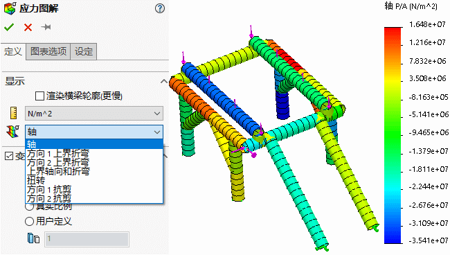折弯
通过这些图解可以得到由折弯力矩引起的法向应力分量的最大值和最小值(极点位置)。这里可以观测到一个相当大的数值(相比轴应力图解而言)-569MPa(负号表示压缩应力)。
截面受到的法向总应力等于轴和折弯分量的总和，即【最高轴向和折弯】的应力图解。
方向1折弯
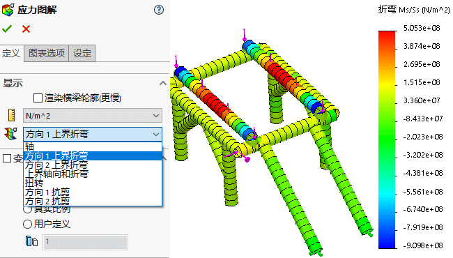方向2折弯
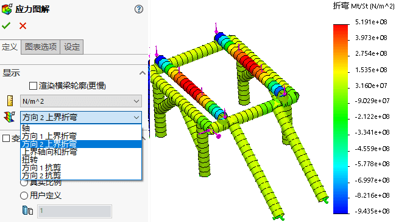上界轴向和折弯
图解增添了轴及方向1折弯的法向应力，显示了横梁截面法向应力的极值。可以发现，最大法向应力1836MPa明显超出材料Plain Carbon Steel 的屈服强度220.6MPa(32ksi)，如图所示。
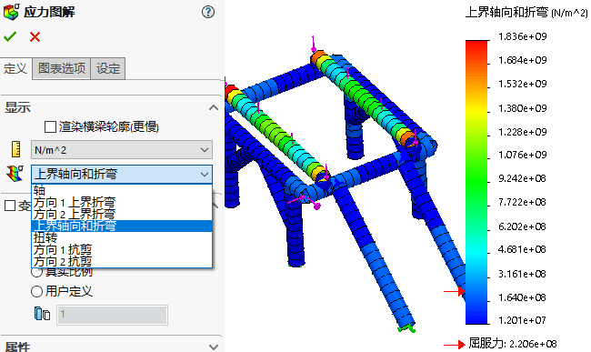横梁图解
可以观察到在单元方向1上力矩是线性变化的，注意在有缺陷的接头位置的力矩为0。相应最大的负值力矩为-3850N·m沿着单元方向1传递到地面。
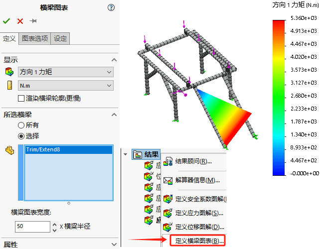列举横梁应力
在【列举应力】对话窗口完全列举了所有横梁单元的最大(最小)法向和切应力。
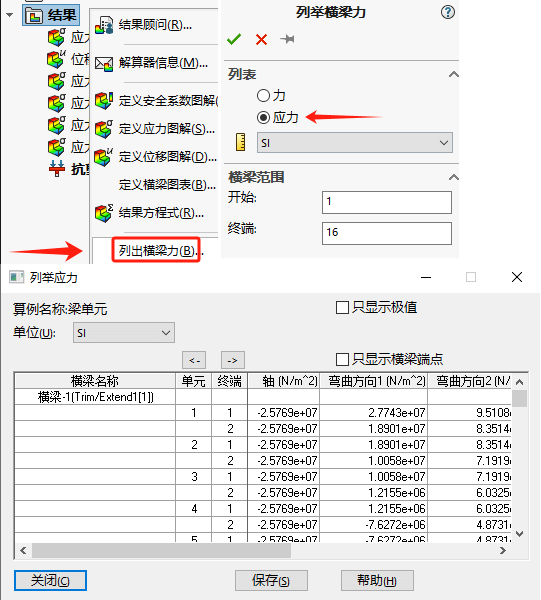